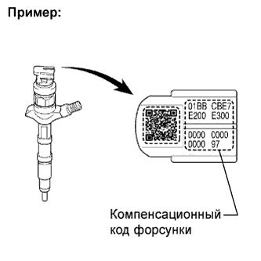

СИСТЕМА ECD (для моделей без DPF) > МЕРЫ ПРЕДОСТОРОЖНОСТИ |
| 1.ИНИЦИАЛИЗАЦИЯ И РЕГИСТРАЦИЯ |
| Заменяемое устройство | Сервисная операция |
| ECM |
|
| Двигатель в сборе |
|
| Зубчатый диск датчика положения коленчатого вала | Удаление данных компенсации времени прокручивания коленчатого вала (Нажмите здесь) |
| Нагнетающий топливный насос в сборе | Инициализация нагнетающего насоса (Нажмите здесь) |
| Форсунка в сборе |
|
| Автоматическая трансмиссия в сборе, двигатель в сборе или ECM | Инициализация автоматической трансмиссии (Нажмите здесь) |
| 2.КОМПЕНСАЦИОННЫЙ КОД ФОРСУНКИ |
|  |
В случае замены форсунки в сборе в ЕСМ должен быть введен компенсационный код форсунки (Нажмите здесь).
В случае замены ЕСМ в новый ЕСМ должны быть введены компенсационные коды всех имеющихся форсунок (Нажмите здесь).
| 3.НАСТРОЙКА ОБЪЕМА ПРЕДВАРИТЕЛЬНОГО ВПРЫСКА |
В случае замены форсунки в сборе необходимо ввести в ECM компенсационный код форсунки, а затем произвести настройку объема предварительного впрыска (Нажмите здесь).
В случае замены ЕСМ в новый ЕСМ должны быть введены значения параметров настройки объема предварительного впрыска для всех имеющихся форсунок (Нажмите здесь).
| 4.ЗАТРУДНЕННЫЙ ЗАПУСК ДВИГАТЕЛЯ, ЗАГЛОХАНИЕ ДВИГАТЕЛЯ, ЧЕРНЫЙ ДЫМ НА ВЫПУСКЕ, НЕРАВНОМЕРНЫЙ ХОЛОСТОЙ ХОД, ЧРЕЗМЕРНАЯ ВИБРАЦИЯ ДВИГАТЕЛЯ, ДЕТОНАЦИЯ ДВИГАТЕЛЯ, НЕДОСТАТОК МОЩНОСТИ ИЛИ ПРОВАЛ В РАБОТЕ ДВИГАТЕЛЯ (ПРИ РАЗГОНЕ) |
Проверьте, соответствует ли неисправность, заявленная клиентом, следующему описанию. Если да, обратитесь к соответствующему разделу по диагностике.
Двигатель запускается с трудом или глохнет.
На выпуске присутствует черный дым.
Имеет место неравномерный холостой ход или чрезмерная вибрация двигателя.
Имеет место детонация или стук двигателя.
Ощущается недостаток мощности или провал в работе двигателя (при разгоне).
| 5.ПРИ ИСПОЛЬЗОВАНИИ ПОРТАТИВНОГО ДИАГНОСТИЧЕСКОГО ПРИБОРА |